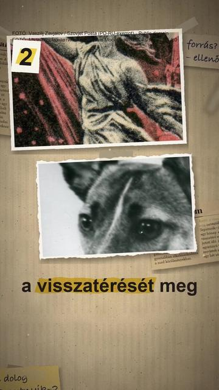

Megnézem a YouTube-on3 dolog, amit nem tudtál Lajkáról, az űrkutyáról
Röviden: Lajka 1957. november 3-án a Szputnyik–2 fedélzetén az első élőlényként állt Föld körüli pályára.
Lajka 1957. november 3-án a Szputnyik–2 fedélzetén az első élőlényként állt Föld körüli pályára. Kóbor kutya volt, Moszkva utcáin fogták be. A szovjet orvosok úgy gondolták, a kóbor kutyák gyorsabban alkalmazkodnak a zord körülményekhez. A Szputnyik–2 nem egészen egy hónap alatt készült el, visszatérő egységre nem jutott idő, így Lajka visszatérését meg sem tervezték. A szovjetek azt állították, hogy egy hét után fájdalommentesen halt meg. 2002-ben egy orosz kutató a houstoni űrkongresszuson bemutatta: a kabin túlmelegedett, és 5–7 óra után már nem jött tőle életjel. A műhold 1958. április 14-én a légkörbe visszatérve elégett. Moszkvában 2008 óta emlékmű őrzi Lajka emlékét. Források: NASA, BBC News, Associated Press, Space.com (lent).
Az összes rész forrásokkal: https://valoban.pages.dev/
Források
- NASA History: 60 Years Ago: The First Animal in Orbit
- BBC News (2002-10-28): First dog in space died within hours
- AP / NBC News (2008-04-11): Space dog monument opens in Russia
- Space.com: Laika the space dog
4 forrás · Hogyan ellenőrzünk?
Hibát találtál? Írd meg nekünk, megnézzük.
Képek és kreditek
• Lajka 1957-ben, a repülés előtt (Űrhajózási Múzeum / Moszkvai Főlevéltár) – Музей космонавтики / Главархив Москвы (CC BY 4.0), CC BY 4.0 (https://creativecommons.org/licenses/by/4.0/) https://commons.wikimedia.org/?curid=155196253
• Bélyeg a Szputnyik–2 indulásáról, 1957. 11. 3. – Vaszilij Zavjalov / Szovjet Posta (PD-RU-exempt), Public domain (https://creativecommons.org/publicdomain/mark/1.0/) https://commons.wikimedia.org/?curid=4067358
• Román bélyeg Lajkával – Colectivul Dumitrana / Poșta Română (PD-RO-exempt), Public domain (https://creativecommons.org/publicdomain/mark/1.0/) https://commons.wikimedia.org/?curid=8166574
• Albán bélyeg Lajkával, 1962 – Albán Posta (PD-Albania-exempt), Public domain (https://creativecommons.org/publicdomain/mark/1.0/) https://commons.wikimedia.org/?curid=98400864
• Román bélyeg Lajkával – Colectivul Dumitrana / Poșta Română (PD-RO-exempt), Public domain (https://creativecommons.org/publicdomain/mark/1.0/) https://commons.wikimedia.org/?curid=8166574
A képek módosítva: 9:16-ra kivágva, átméretezve, kameramozgással, ráégetett felirattal.